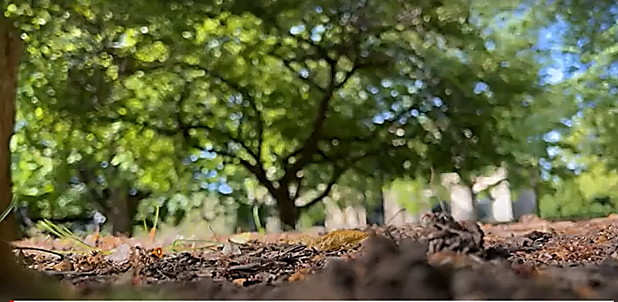
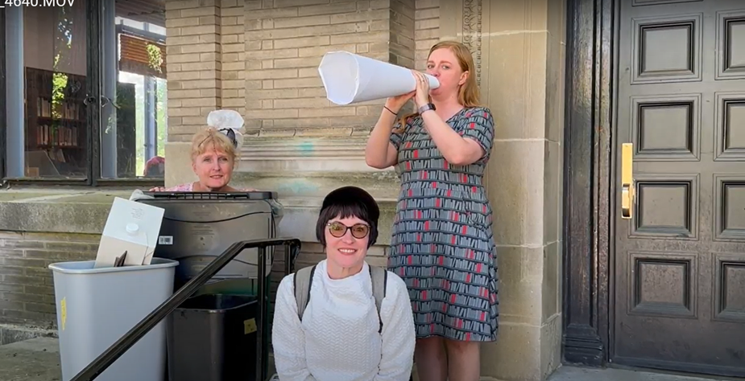
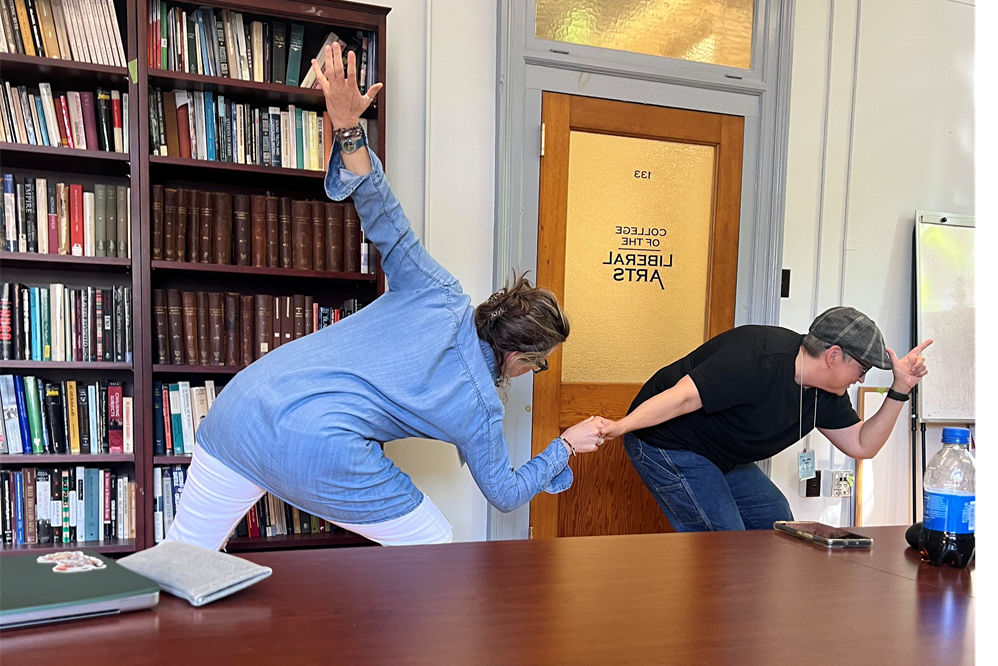
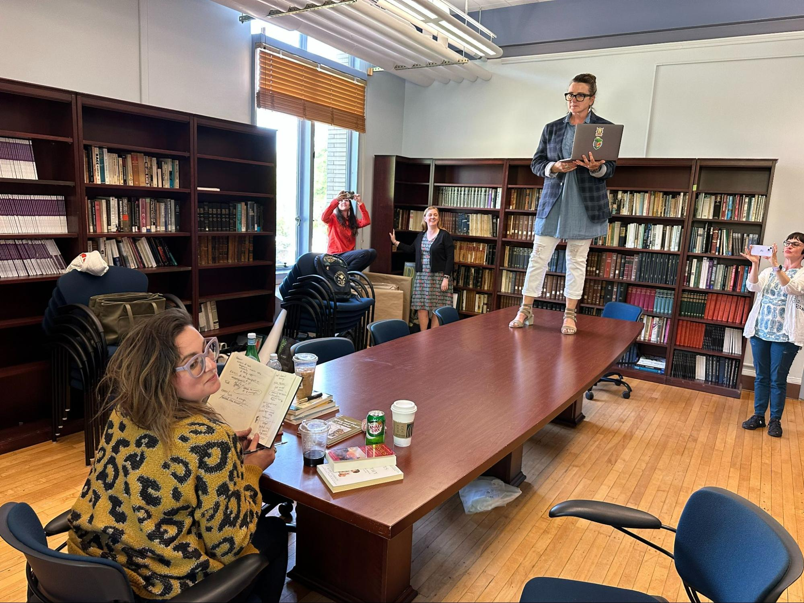
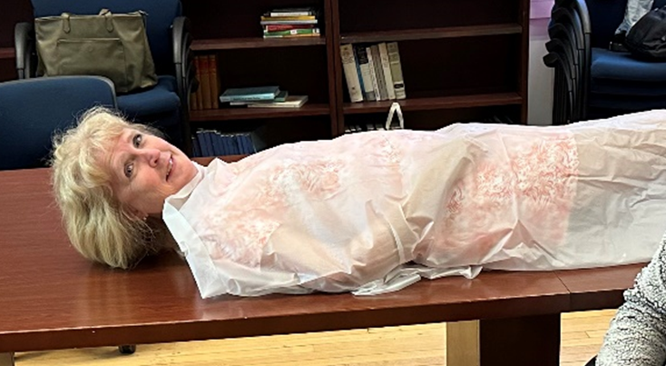

introduction
Rehearse, Revise, Regenerate: Critical Theater as Rhetorical Practice, A Digital Performance
[Names and identifying information of participants and contributors replaced with single initial for blind review.]
The awe-inspiring Greek theater at Taormina, Sicily, adorns the home page of this digital book, through which readers can enter and explore the “acts” compiled by contributors. Built in the third century CE, the theater was constructed on the side of Mount Tauro. Little of the Greek original structure exists today, besides a few seats, which are marked “with paleographic characters of third century B.C” (Gabellone, Ferrari and Giuri 2). The buildings we see today are the result of an overhaul during the time of Imperial Rome (2). Nevertheless, the theater’s magnificence recalls the great Greek theater of Dionysus in Athens — built in the 6th century BC — in which Greek tragedians, comic, and satyr playwrights competed yearly for prizes at the Festival of Dionysus.
We begin by paying rhetorical homage to the most famous of the comic playwrights, Aristophanes, whose first play The Banqueters was produced at the Theater of Dionysus in 427 BC (“Ancient Greek Playwrights”). He went on to have a prolific career, producing such famous plays as Clouds (423 BC), where he satirizes Greek Rhetorical Education, (423 BC), Birds, (414 BC) and Lysistrata (411 BC) — the latter plays providing commentary on the Peloponnesian War. His plays, as Edith Hall notes in an interview with James Robson for the Open University, were immensely political, well known, for instance, for his biting commentary on the popular democratic leader Cleon (“Aristophanes Athens”). They were notably vulgar, as Robson acknowledges, “given its earthy and obscene origins, some of Greek comedy can be shocking to our modern sensibilities” (“Sex, Swearing and Satire in Aristophanes’ Comedy”).
As Fiona Harris Ramsby points out in Language and Power on the Rhetorical Stage, despite his excessive profanity and lewd comedy—or perhaps because of it, if you know the co-editors well—Aristophanes provides a fleshly starting point for this project, a spotlight illuminating our collection’s interest in the intersections of performance, critical rhetoric, and language play. In Clouds, for instance, “the play’s obsession with digestion, excretion, and other such bodily functions insists that rhetoric is always subject to the body” (Harris Ramsby 22). In some of Aristophanes’ other plays, commonplace expressions become characters who both perform and embody problematic language. This oftentimes sticky embodiment and personification of commonplace language-practice demonstrates the very real socio-political relationships between language and bodies.
As the playwright’s characters embody commonplace language and enact idioms or expressions, the end result, Harris Ramsby notes, citing Wilfred E. Major, is a reconfiguration of language, offering new, often politicized meaning (Language and Power, 23). Aristophanes’ technique allows us to “witness [the] shortcomings, [and the]…potential for violence and human undoing” (43) so often subtly encoded into everyday language practices, as it provides political fodder for satire and social commentary. In her book, building on Aristophanes’ work and analyzing similar approaches in contemporary theater, Harris-Ramsby names this dramatic word-play “critical discourse perspectives.”
In this digital collection, we build on Harris Ramsby’s initial phrase and recognition of the ways theater and performance provide a site for revealing language play, naming our approach “critical discursive rhetorical performance” (CDRP) — an approach that attentively and intentionally co-mingles the mechanics of critical discourse analysis (CDA), rhetorical awareness, and performance to bring forward naturalized, taken-for-granted, or occluded relationships between social relations, power, and communicative practices.
Aristophanes’ reconfiguration of common expressions might not match our current sensibilities. For instance, his treatment of the female character “Reconciliation” in Lysistrata is crudely exploitative, as she is grossly and metaphorically plundered by the Spartan and Athenian delegates. Nevertheless, we use his work as a template for our own performances of critique, especially as we lean into performances that reveal how language impacts bodies and shapes our current environment or, conversely, models how bodies and environment may in turn give shape to language. As this digital collection’s contributors take inspiration from Aristophanes, appropriating commonplace utterances from a variety of venues and employing theatrical tactics to perform that language, we argue that performance can reveal the rhetorical nature of everyday language, illuminating the ideologies, power dynamics, and relational implications embedded in everyday communicative action.[1]
Our dramatic approach, then, becomes a form of rhetorical awareness and discursive critique, where we use drama, performance, and other theatrical tools to examine the relationships between action, language, societal norms, existing power structures, and an array of social influences. Just as Aristophanes targeted political figures, social customs, and philosophical trends of ancient Athens, our contributors dramatize and dissect the ways that language shapes an embodied world.
Scholars in writing and rhetoric have often called for more complex definitions of rhetoric and related theories, especially as these foundations inform how we theorize and teach rhetorical situations (Hawk, Braidotti, Shipka a, Alexander and Rhodes a, Rhodes and Alexander, Corder). Emergent scholarship has responded to this call by examining rhetorical ecologies (Edbauer [Rice]), embodiment (Chavez, Hawhee, Dolmage a, Dolamge b, Fleckenstein, Knoblauch and Mollier), publics, audiences, and evidence (Warner, Rice a, Rice b, Boyle and Rivers), and multimodality (Shipka b, Alexander and Rhodes b, Yagelski, Arola and Wysocki, Rivers). Our project responds to these calls, bringing together theatrical performance, critical rhetoric, and CDA to afford “greater attention to the spaces, materials, and networks through which writing [and so the rhetorical] emerge” (Rhodes and Alexander).
We turn to theatrical techniques in this project to harness critical play as a tool for building critical rhetorical and language awareness (Micciche). Scholars fascinated with critical play as a pedagogical intervention emphasize that play can free practitioners from overdetermined understandings of conventions, as it encourages exploration, experimentation, risk-taking, curiosity, and reflection on the self, other, and rote expectations (see for instance Sirc, Gee, Shipka, Oleksiak). Play has been understood to make implicit or unrecognized rules or boundaries more explicit–sifting the felt-sense and intuitive into greater attention. We join scholars in Writing Studies who have taken up play to explore process (Roozen a, Roozen b), genre and voice (LaFrance and Hardee), the overlaps and differences between creative texts and the texts historically produced in composition-contexts (Hesse, Graff), the nature of “experimental writing” (Sullivan), as well as multimodal and transmodal writing studies pedagogy (Arola and Wysocki, Rhodes and Alexander, Shipka). Encouraging praxis, play in many forms liberates us to intuitively feel out and come to own the aspects of our lived, learned, and shared experience.
It is no secret that theater is a powerfully creative site that has much to teach rhetoricians – and students in their classrooms – about the complexities of rhetoric (Fishman et al, Love, Gencarella and Pezzullo, Harris Ramsby). When coupled with tools like CDA and rhetorical analysis, we argue that theatrical performances become sites for the study of the very complexities rhetoricians have called us to better understand. Though they may not use the term “rhetorical,” theatrical practitioners intuited that language, power, and rhetoric are always handshaking long before we got here. Augusto Boal's transformative approach to theater as a means for social change in Theater of the Oppressed, for instance, is attuned to the close inter-workings of language and the social order. Performance studies scholars (Conquergood, Phelan, Sedgewick, Taylor, Muñoz) and drama-based educators (see Dawson and Lee, Tulk) often tacitly platform the study of rhetoric as an ecology – that is, critical, creative, pedagogical, and specifically embodied in time and space – as they demonstrate how language is lived in the here and now. Building on the work of rhetoricians and critical discourse analysts who have ventured into the multimodal (see Hildalgo, Rhodes and Alexander, Machin and Mayr, Kress and Leeuwen), this digital collection blends critical rhetorical, CDA, and dramatic practice to understand that ecologies take shape where discursive power and embodied action intersect. We are so pleased to share our vision of dramatic and socio-rhetorical/socio-linguistic analytic critique, with scholars, teachers, and students seeking a fresh take on teaching language-awareness as a form of multidisciplinary and transmodal play.
Creative Play: Transcending Academic Context
Play is also just a rollicking good time – picture now in your mind’s eye, a campus of greens, enormous trees, and stately historical buildings… as we shift gears.
M strolls in after lunch. She looks pleased, content. A couple of us notice grass in her hair. The rest of us are stuffed from the Indian restaurant off College Avenue. M, however, has been prostrate on the lawn, belly resting in the cool grass. Crawling prone, she hunts for the space where green meets brown, where grass meets soil, to capture the border where nature is manipulated. In this liminal zone, she searches for the perfect visual representation of dirt. She is working through the ways definitions of dirt can be read as metaphors of social discomfort.
Our ordinary conceptual system, in terms of which we both think and act, is fundamentally metaphorical in nature.
Lakoff and Johnson, 4.

(Image Credit: x)
Later, F lowers herself into a trashcan. L dons a ball cap and smiles with her teeth. M rolls up a large piece of paper; She has a megaphone! We’ve transformed the majestic entrance of the Burrowes building into an urban Sesame Street set. M simulates a newscaster, while L satirizes the passive voice; child-like and grinning, agents are deleted in a repetitive crescendo as she replicates the varying ways the syntax removes responsibility from the committers of dubious acts. (Image Credit: x)

Racial slurs were shouted, buildings were bombed, and families were displaced during the tumultuous period of civil unrest.
And, as the end of the day approaches, we scout the hallways of the Sparks Building, usually home to Departments of foreign languages, to locate the perfect backdrop. Once situated, J stands on a bench, iPhone aloft. F manipulates the font on the screen of a laptop, so M can read her script from this improvised “prompter.” As she recites her manifesto on improving conditions for working mothers, M and L pile on plastic bags and bottles, asking questions and making demands. We have to reshoot several times as M, giggling, stuffs a Gatorade bottle down her t shirt, and navigates several burlap bags on each shoulder.
“When can I expect the project proposal on my desk?”
“When can I have ice cream?”
“Send me the project proposal by end of day!”
“Play with me now!”
* * *
In late May 2023, 8 women gathered at Penn State University to participate in one of the Rhetoric Society of America’s summer workshops, “Creative Critical Work and Rhetorical Practice.” Led by J and F, the workshop’s goal was to invite participants to bring CDA — a branch of linguistics that examines how power structures and social inequalities are embedded in language — into playful conversation with rhetorical embodiment and theatrical practice. The workshop offered participants opportunities to “try on” the critical practice of linguistic analysis reimagined via guidelines for dramatic performance inspired by the great Brazilian dramatist, activist, and theorist, Boal.
We thus found ourselves, over the course of the three-day workshop, engaging in a powerful and nuanced intervention into everyday language and rhetorical practice, revealing the silent coercive, persuasive, and interpolative nature of common texts, journalistic pieces, blogs, reports, and recognizable yet tacit forms of everyday speech. Alongside M’s foraging for earthy metaphors, L’s performance of G’s script demonstrating the cloaking of passive voice, and M’s enactment of interrogatives and imperatives, other participants staged skits enacting critical discourse analytics and rhetorical framing, which we eventually recorded, edited, and showcased in the final hours of the workshop.
Coupled with the intergenerational sisterhood we cultivated over those three short days, we made some important discoveries about the nature of academic knowledge. “Best academic conference, ever,” enthused M. In between riotous bouts of laughter and several turns of play, we pondered why. Perhaps, as M suggested at the conclusion of the workshop, participants were fueled by the excitement of releasing themselves from the confines of textual conventions and the constraints of acceptable scholarly language that often establishes the field of rhetorical studies. We all eagerly embraced this creative and unconventional approach to learning about the rhetorical work of CDA, calling out normalized yet coercive linguistic structures that shape our bodies in imagined contexts. It took just a few hours, and a willingness to play, for the group to transcend the borders of text to a place where language — rhetorical and critical — and bodies met, moving from page to rhetorical embodiment, to the rhetoric underlying drama, to the rhetoric of staging, to rhetorical performance. (Image Credit: x)

We posed. We arranged. We contorted. We recognized ourselves rhetorical.
Among our overarching considerations was an exploration of the overlaps between CDA, rhetorical studies, and performance – conversations that have become the basis of the CDRP our contributors and their projects demonstrate in this digital collection. While CDA arose in functional linguistic circles of the 20th century, it quickly garnered the interest of social and cultural critics, such as Foucault, Habermas, and Giddens, who argued that the workings of language were never neutral or disinterested. As work in CDA broadened through the 70’s to address social, cognitive, and rhetorical theory (in the arguments of Fairclough, van Dijk, or Wodak, for instance), the close overlaps and complements to work in rhetorical studies became more clear. Now, many rhetoricians and writing researchers move seamlessly back and forth between these tool sets. Huckin, Andrus, and Clary-Lemon note the similarities and throughways: like rhetoric, CDA addresses social problems, understands power relations as discursive, understand “discourse” (so communication, language-use, and rhetoric) as socially-constitutive, ideological, and mediating, and work with CDA as interpretive, explanatory, and analytic. In short, discourse is a form of social action, because it encompasses the rhetorical (108). As we came to recognize, CDA gives us a well adapted tool box to pursue rhetorical interests; rhetorical analysis helps us to situate and hone CDA-based analytics; playful performances allow us to feel out, to explore, and to demonstrate how language and its rhetorical framings touch, move, inform, imagine, and animate bodies.
On those three sunny days in May, we “broke through into performance,” to evoke Dell Hymes’ groundbreaking work in linguistic anthropology and the pathways it enabled for our own projects. For Hymes, whose work in folklore and anthropology has been instrumental in crossing boundaries between performance studies, linguistics, and the study of the social, performance is a knowing enactment of cultural values embedded in language, which moves from the mundane (grammatical knowledge) to the creative (performing in social, so rhetorical, contexts). Hymes writes of those disciplinary boundaries,
In contemporary transformation generative grammar, the term performance treats overt behaviour as a realization, quite likely imperfect, of an underlying knowledge on the part of a speaker. In contemporary folklore, the term performance has a reference to the realization of known traditional material, but the emphasis is on the constitution of a social event, quite likely with emergent properties (80-81 emphasis ours).
In linguistic study, performance is often reflected as interpretation, classification, and reportable (83). In folklore studies, performance is an act of doing in a specific context. For Hymes, the two should not be distinct. In fact, Hymes writes, “these two latter considerations will be essential — the performance as situated in a context, the performance as emergent, as unfolding or arising with that context” (80-81). Permit us to extract:
“The performance as emergent, as unfolding or arising…”
More simply, for this project, critical performance foregrounds the rhetorical nature and structuring work of language.
Perhaps M’s enthusiasm riffs on a slight and reverential skewing of Hymes, in that our discoveries during that workshop yanked us out of the theoretical confines of textual discourse analysis to the nascent and overtly rhetorical properties of performance. For Hymes, a breakthrough-to-performance occurs when one becomes competent; when we not only know how to do something, but can actually perform that something within a specific cultural context. The doing, then, of CDA, is also a breakthrough performance, which translates theoretical knowledge into practical action or — with a little push and the right contexts — drama. The rhetorical, while not central to Hymes’ claim, is a ghost presence in this process of translation–the invisible hand steering the dramatic decisions to be made.

The RSA Institute began with a series of theatrical exercises to foreground the rhetorical performances deeply embedded/embodied in everyday language practices. This approach allowed our cohort to actively engage with and interpret the textual discourses they brought to the workshop, demonstrating their felt-sense and embodied understandings of language and power through the performances enacted. Thus, our embodiment of theoretical rhetorics and linguistics made visible a more overt and experiential knowledge as our performances sifted them from tacit understanding to dramatic action.
But there’s more. Our rhetorical bodies performed rhetorical linguistics in ways that made the knowledge tangible — in the body — and this embodied knowing marked a departure from our specific context’s norms - the academic seminar. For Hymes, “The concern is with performance, not as something mechanical or inferior, as in linguistic discussion, but with performance as something creative, realized, achieved, even transcendent of the ordinary course of events” (81). Initially, we mechanically “performed” academia in Penn State’s grand hallways — politely greeting each other, sharing names and affiliations, research interests, and readings. However, we ultimately exceeded the boundaries of a typical academic seminar or workshop. In our efforts to enact the theoretical, we became playfully subversive: standing on tables, giggling, scuttling down corridors, slinking around areas that had not been allotted to our seminar space, being too loud. We scoured the campus and our hotel rooms for props — a shower curtain became a full-body prophylactic, for instance, and a trash can in a lobby became a Sesame Street-like prop — to put our vision of CDRP into action. (Image Credit: x).

Scholars in writing and rhetoric have often called for exactly this type of synthesis across arguments and praxis, especially as these foundations inform how we theorize and teach rhetorical situations. In her work on transmodality, Shipka for instance, argues that multi-and trans-genre work allows “a behind-the scenes or ‘backstage view’” of commonly naturalized practices. Pedagogically, such transcendent play allows us to make visible and study “processes of making (including the production of more familiar/traditional, seemingly monomodal/monolingual texts as well as those that employ multiple semiotic resources and language varieties),” which “helps illuminate the highly distributed, embodied, translingual, and multi-modal aspects of all communicative practice, something that is often overlooked or rendered invisible when analyzing final/finished texts, products, or performances” (253).
As we move from playful institute to playful digital collection, our project lends to these calls, bringing together theatrical performance, CDA, and rhetorical analysis to afford, as the “Mt. Oread Manifesto on Rhetorical Education” names, the pedagogical, civic, transdisciplinary, and transrhetorical possibilities of “all modes of communication, including visual, literate, digital, and oral forms,” particularly “projects that look at the interplay of rhetoric and the civic sphere—historical, theoretical, pedagogical” (4). When coupled with tools and practices–what we are calling CDRP–that allow us to defamiliarize everyday language use, theatrical performances become sites for revealing the complexities at the heart of rhetorical and linguistic study.
Our experiment and this resulting collection, creatively, critically, and multimodally demonstrate how rhetoric, CDA, and bodies shake hands in the everyday. As a result, the knowledge we collaboratively constructed didn’t just land; it inhabited us, and we inhabited it. It felt slightly wicked, as though our meaning-making was a form of playful misbehavior. We were on a mission.
Critical Rhetorical and Discourse Analysis as Mis-behavior: A Performer’s Primer
Our misbehavior emerged from this shared experiment about how CDA roots out misbehavior in language. That is, in our workshop, we wanted to perform the types of language and rhetorical framings that scholars, teachers, and practitioners would identify as suspect. Our goal was to discover what it felt like when language does; that is, when the effects of language can be felt as embodied practice or as the vehicle for often otherwise invisible power relations. We turn in this section to the specific tool box of CDA and rhetorical attentiveness that is central to this process of growing awareness, feeling out, and then performing the socially organizing work of language—what we have named CDRP.
As we have noted, rhetoricians, linguists and critical discourse analysts have much in common. CDA identifies patterns, presences, and influences in specific language use, emphasizing that which might often go unmarked, unacknowledged, ignored, dismissed, or elided in conventional language practices. Close attention to how micro instances of language function with macro relational and societal effects (in terms of how we make meaning) is illuminating for linguistics and rhetorical scholars. Seemingly small meanings may have considerable effects, as our “Acts” will demonstrate. Laura Aull and Shawna Shapiro argue that in focusing on linguistics, writing, educators who teach writing and rhetoric may promote evidence-based understanding of linguistic inequalities. They state, “linguistics … offers tools for systematic examination of language itself, including micro-level patterns (word and phrase, or lexicogrammatical patterns, such as noun phrases) and meso-level patterns (sentence and paragraph patterns, such as subject/verb coordination or rhetorical moves) as they inform or challenge language ideologies.” Similarly, rhetoricians frequently examine the mutually constitutive relationships between social practice and language use (such as how language may suggest or elide authority).
More specifically, CDA practitioners’ interest in the asymmetrical power relationships expressed in language[2]often focuses their analysis on the utterance as a primary linguistic feature in everyday conversations, texts, and other communications. While we might frequently confuse an utterance with a sentence, a sentence can be understood as a grammatical unit (or an identifiable device of language), whereas an utterance is understood in relation to broader meaning making practices. To further clarify, in this project, we define an utterance by looking at how a sentence or block of meaning making is used in specific social, so rhetorical and linguistic, contexts. Like a sentence, an utterance will have a beginning and an end, but the end may not be determined by a punctuation mark.
Like rhetoricians and performers, critical discourse analysts examine how information is presented grammatically and syntactically, but pay close attention to how what is said takes shape within specific contexts. The analytic insights uncovered — be they labeled linguistic, rhetorical, or both — demonstrate that social relations are integral to everyday language practices. Analyses reveals what has been naturalized, normalized, obscured, or framed in particular communicative situations. As such, critical discourse analysts frequently study utterances to determine the connections between meaning and ideological investment; that is, they study the micro uses of language to examine the effects of that language at the macro level (discourse).[3]
As rhetoricians, linguists, and performers know, language may be doing dirty work, ignoring ethical boundaries, invisibilizing or muddying agents and intentions, weaponizing language, paving the way for real-world consequences. When practitioners of CDRP, such as contributors to this collection, look at spoken or written structural utterances, their performance becomes a form of embodied analysis, which raises the form and organization of language to intelligibility. Performing analyses brings forward the felt-sense impact of linguistic features like agent deletion, topicalization, transitivity, modality, presupposition, sentence complexity, and other aspects of word order for audience recognition.
Even when CDRP practitioners dramatize the epistemological, semantic and pragmatic aspects of language use, such as rhetorical framing, the rhetorical work of metaphor, lexicality, the lived-experience underlying rhetorical terminology, or how language and the everyday collide, oppose, or contest one another, they are able to bring often hidden, exclusionary social norms and other varieties of power dynamics embedded within language to attention. Performances highlight the world building and paradigm-informing nature of language to demonstrate how communicative strategies take form in alignment with ideological investments, norms, and ways of being, doing, and knowing. The productive nature of language is laid bare.
With attention to language at the core of a performance, CDRP practitioners bring power relationships into relief – a form of celebratory misbehavior central to the best rhetorical and CDA work, as performers are set on unmasking communicative practices that obscure, disavow, or normalize dehumanizing, racializing, and authoritative language practices.
Let’s look at an example of CDA doing critical metaphor work. In a recent interview, eminent critical discourse analyst Ruth Wodak illustrates the ways in which extreme right wing populist leaders in Europe and America employ metaphoric language to shape public perception of immigrants. She notes,
The linguistic strategies in discourses about refugees and migrants frequently involve metaphors of floods and other natural catastrophes (‘refugee flows, tsunami, waves of refugees’) as well as dehumanizing comparisons equating the foreigners with animals, especially vermin, and pathogens (foreigners are described as being like ‘parasites’ or ‘viruses’). (236)
Wodak also points out that language evolves to intensify the perceived dangers that anti-immigration politicians aim to establish. The portrayal of immigrants as a risk escalates as rhetoric becomes more extreme. Thus, in other instances, immigrants are “presented as powerful and aggressive, even as ‘invaders’, while the majority population is presented as powerless and weak” (236). Whichever metaphor is deployed — to evoke the battle metaphor politicians often use — those same leaders present themselves as the antidote, the saviours of the realm (237).
What politicians tend to background is that often immigrants are fleeing war zones and other sites of horrendous political struggle.
We reference Wodak’s content based utterance analysis (as opposed to structural utterances) because of the close relationship between language, rhetoric, and embodiment it presents. That is, the metaphors rhetorically constitute the bodies of immigrants in ways that depersonalize and dehumanize them. The body then is inscribed as text. In this instance, powerful political forces ‘write’ upon the body, shaping its appearance, behavior, and meaning.
This textual dehumanization where human beings are reduced to textual constructs suggests Norman Fairclough’s point that critical discourse analysts consider a range of phenomena as objects of analysis. He writes, “Texts are to be understood in an inclusive sense: they are not only written texts but also e.g., conversations and interviews, as well as the ‘multi-modal’ texts (mixing language and visual images) of television and the internet. Some events consist almost entirely of texts (e.g. a lecture or an interview), in others texts have a relatively small part (e.g. a game of chess)” (11). Fairclough infers that conceptions of ‘text’ are flexible. However, critical discourse analysts, like Wodak’s work on the framing of immigrants, predominantly produce within traditionally textual frameworks. In other words, their analyses and outputs are primarily print based.
Many critical discourse analysts work in multimodal venues (see, for instance, Machin and Mayr, Kress and Leeuwen). Digital texts allow CDA practitioners to capture the tangibility of aesthetic and dramatic patterns in language use. Our work with CDRP goes one step further than producing digital texts that employ CDA, however. CDRP seeks to act out language practices, emphasizing through performance the effects of linguistic misbehavior, conveying the visceral – embodied and lived – effects of language. By embodying our practice dramatically, we align with Abby A. Knoblauch and Marie E. Moeller’s conception of the body as a “fleshly” site of knowledge construction and meaning making (7-9). We agree with Knoblauch and Moeller’s view that language and rhetoric shapes bodies that are, “judged, controlled, mediated, medicated, incarcerated, all in unequal ways, as those in power react/respond to the physical characteristics of the specific and culturally coded body itself” (5).
Our work with CDRP can, as contributors show, call out socio-rhetorical language use that dehumanizes the people who are subject to it. The women at the RSA Penn State workshop tried on performances of every day language-in a variety of imagined contexts, echoing Knoblauch and Moeller that “[b]odies are always judged in concert with contexts” (5). As we imagined scenarios important to us, scenarios we recognized, and scenarios that are normalized, so occluded, dismissed, elided, or forgotten, we costumed ourselves in unruly rhetorics to explore the spaces where drama, rhetoric, and critical discourse analysis meet.
To aid us in this theatrical undertaking, we turned to Boal.
Boal’s Regenerative Theater: A Primer for Misbehaving
As we note above, we are far from the first to consider the rhetorical and linguistic analytics embedded in theater. We are far from the first to suggest that bodily performances are intricately bound to rhetoric and language. And, we are certainly not the first to suggest that thinking about these intersections can be a powerful and pedagogical form of rhetorical or linguistic activism.
In Theater of the Oppressed, Boal shares a unique, but now well practiced method of political (qua rhetorical) activism that draws on theatrical techniques. His method stems from his rejection of a traditional theatrical experience, where audience members passively watch a play, in the Aristotelian sense, and are coerced into experiencing and internalizing its ethics. Boal’s disdain for Aristotle’s praise of tragedy in Poetics is blatant. He writes of the function of an oppressive regime,“It is necessary to make sure that all remain, if not uniformly satisfied, at least uniformly passive with respect to those criteria of inequality. How to achieve this? Through the many forms of repression: politics, bureaucracy, habits, customs – and Greek tragedy” (21; emphasis ours). The Greek tragedy, for Boal, is propaganda. Indeed, Boal stands against coercion into the unquestioned moral and social order via the dramatic techniques of emotional manipulation and catharsis.
To shape a more liberatory “Poetics of the Oppressed,” Boal suggests a series of steps to turn spectators into “spectator-actors”- steps we loosely adopted during our workshop:
-
“Knowing the Body.” Boal notes that “Spectator-actors” must participate in a series of exercises to explore the “body, its limitations and possibilities, its social distortions and possibilities of rehabilitation” (102).
→ To enact this first stage during the first morning of our workshop, we played several theater games to get to know our own bodies, break down inhibitions, and foster camaraderie.
“Making the body expressive.” Boal suggests “a series of games by which one begins to express one’s self through the body, abandoning other, more common and habitual forms of expression” (102).
→ Once our bodies had been primed that first morning, we were ready to embrace stage two in the first afternoon. While maintaining the spirit of creative play and bodily activation, we shared the utterances we wanted to interrogate through CDRP. Participants had been asked to bring documents, scripts, and personal stories to the conference table. Our afternoon session asked us to discuss why we had chosen these linguistic artifacts.
Even during this first sharing, our bodies were an undeniable presence. As we read our example texts and talked together, our conversations slid seamlessly into “performances” of rhetorical and linguistic features – our bodies’ attentions had clearly been captured. We began to imagine staging and blocking, each member of the group contributing to others’ ideas as we focused, tightened, abandoned, and revised, simultaneously working through the problems presented by taking ideas to material actuality.
“Theatre as language.” Boal writes, “one begins to practice theater as a language that is living and present, not as a finished product displaying images from the past” (102).
→ During our third morning together, we collaboratively filmed our projects, making suggestions, creating impromptu and rudimentary scenes, repositioning our bodies, and tweaking our scripts as we learned in real time about the shaping influence of the language we chose, found, and composed. Inspired by the rhetorical and linguistic sensibility inherent to Boal’s ideas, our performances emphasized manipulative and occluded power-relations often embedded in everyday language practices. These performances interrogating the impact of language upon our bodies, the bodies of others, and the social order.
This collection is our realization of Boal’s fourth stage in the “Poetics of the Oppressed,” which he identifies as “The theatre as discourse.” In this stage, the “spectator-actor creates ‘spectacles’ according to his need to discuss certain themes or rehearse certain actions” (102). Our collection springs from our realization at the RSA that we had undertaken forms of rhetorical and linguistic critique that were not only powerful, but also powerfully instructive. In our scholarship, in our classrooms, and in our communities, the “need” to “discuss and rehearse” the language that irks, frustrates, and terrifies us — language that infuriates and silences in its pretense of normalcy — has never seemed more timely.
Each contribution to this digital collection reflects exactly this deeply personal exploration and resulting performance of language. Contributors have chosen to explore utterances that they find coercive, authoritarian, stymying, opaque, manipulative, or oppressive. Each contribution is therefore neither abstract nor merely academic, but intimate in its confrontation with words that have left us cold, confused or constrained. Inspired by Baol, our enactments of CDA - our CDRP - are acts of, reclaimed agency.
Our “Acts”
Welcome. Please Silence Your Cell Phones and Refrain from Unnecessary Conversation.
As this is a digital collection, we have been afforded a good deal of creative latitude in presenting examples of CDRP for readers. In keeping with our theatrical theme, and with one eye fixed on our unwitting patron — Aristophanes — we have curated a series of multi and transmodal “Acts,” composed by contributors who attended the RSA institute and others invited to join with us as the collection gained traction. Acts offer each performer a “stage” in the form of a unique webpage, where they present their transmodal performance of language work, anchored in time and space by an Artist Statement. The Acts move from physical spaces (Act 1) through environmental concerns (Act 2), historical injustices (Act 3), gender and power (Act 4-6), and racialized temporality (Act 7).
As our audience, you may sample the Acts in the order our text describes below or more randomly. We provided tabs between performances for those who are more linearly motivated. We also want to acknowledge the wide array of tech accessible to contributors, acknowledging the many ways that gaps in tech-accessibility yet structure the scholarship of our field and the specific projects and visions collected here. We actively chose to overlook gaps in technology and its affordances so that we might support new voices in the field and enact inclusivity.
In Act 1, LM and SG open our collection with “The Doorway.” They deploy video and interview transcripts to investigate and interrogate the ways in which our built environment positions us unevenly. S, a student, is a wheelchair user and disability community activist. L, a professor, has an invisible disability and teaches courses in disability rhetoric. Their video follows S as she navigates a central campus location, highlighting the grueling process of entering the student center’s doorway and capturing the innovation a wheelchair user must employ simply by way of existing in the public sphere. It is not just the building that is kept from the disabled person, they show, but also the information, materials, connections, and education beyond the door. The chapter also contains an addendum of the assignment prompt that led to the video creation. This act is useful for those interested in rhetorical terms such as Metis/ Embodiment; CDA terms such as power relations and social practice; and CDRP awareness of: Ableness, bodies, and “Cripping.” [Tech Note for Reviewers: This Act includes a text-based Artist Statement, a downloadable interview transcript, a downloadable assignment prompt, and one video.]
Act 2, a short film, “Dirt: A Play in Composted Text” and an accompanying Artist Statement by ML, explores the metaphorical nature of dirt/soil/compost to critically question how everyday language use, particularly definitions, may support a sense that the natural world is devoid of agency, inanimate, and/or dead. ML connects her film to current work on ambient and material rhetorics, as well as multimodal and material ecologies. ML’s project adopts Boal’s “social poesis” — a critically-minded poetry that seeks to make change — as her script riffs on critical metaphor theory, ideals of genre and intertextuality. [Tech: This Act includes a video of the play, an Artist Statement and a downloadable transcript.]
In Act 3, G’s “C4 Street,’’a political-satirical nod to Sesame Street, moves from soil to concrete. This act marshals satire as civil civic discourse, demonstrating the language the popular press used to discuss the 1985 MOVE bombing, whereby Philadelphia law enforcement killed 11 people, some of whom were children, and decimated residential homes belonging to the black liberation organization MOVE. Focusing on agent deletion in passive voice constructions, metaphoric criticism, and subject/actor obfuscation, the actor-rhetoricians in this chapter interrogate how reporting on the bombing erase culpability and oppression. This Act includes a lesson plan for further study. [Tech: This Act opens to a video that performs news reports of the 1985 Move Bombing, demonstrating ambiguous grammar. Linked after/beside the video will be a downloadable text-based lesson plan and transcript of the video.]
FH and AP, with help from yn (camera and web design), and PLT give us Act 4, “Measured Misconduct: Angelo, Harvey, Larry, et al.” This performance’s analysis of language, gender and power provides a critical examination of #MeToo movement rhetoric, specifically the language of men accused of sexual misconduct. By analyzing the syntactic patterns of Harvey Weinstein, Larry Nassar, Louis CK, and others, the performers draw parallels with the character Angelo from Shakespeare’s Measure for Measure. As the performers focus on Angelo’s evasive rhetoric, the vehicle of his manipulation and exploitation of Isabella, a young nun, they simultaneously block Angelo’s and Isabella’s movements via the syntactic patterns of accused men, which are projected onto the walls of a claustrophobic performance space, this act illuminates the discomforting linguistic strategies used in real-life instances of sexual misconduct. Particularly the performers provide a physical rubric by which to understand the ways language performs avoidance of accountability and victim-blaming. Rhetorically, this performance treats registers of evidence. Linguistically, it demonstrates agent obfuscation and elision, as well as coercion and compliance. [Tech: This Act will include a link to an Artist Statement, photos of rehearsals and filming, videos of Acts 2, Scene 2 and Act 2, Scene 4 adapted from Shakespeare’s Measure for Measure, and the film’s transcript.]
In Act 5, “Un-Mothered,” LDB interrogates metaphors central to adoption through movement and poetry, calling to attention how modern adoption laws write out birth parents and seal legal records to erase these origins. LDB’s performance draws upon her own experiences as an adoptee, to rhetorically reconstruct herself and conception of birth mothers. Un-Mothered explores the nuances of language and utilizes embodied performance as the methodology for empathetic exchange/social change through theatrical storytelling. Discourse dependency, master narratives, critical metaphor theory, subject-object power, and coercion are the central rhetorical and linguistic tools employed by this performer. [Tech: This Act will include a video performance, a link to an Artist Statement, and transcript of the video.]
“Working Mother/Mothering Worker” by MW builds on the previous chapter’s exploration of mothering and provides our sixth act. Using CDA to analyze the rhetoric surrounding motherhood, this multimedia chapter focuses specifically on interrogation and imperatives, direct and indirect speech acts, and differing modalities to analyze the messages given to “working mothers,” both in popular media and by individuals in their lives. This act rewrites discourses of working motherhood, as it embodies them in a filmed performance, demonstrating the unrealistic nature of demands placed on mothers and how these demands shape our perceptions of the mothering body. As it unfolds, this performance demonstrates the tensions between public and private rhetorics, and demonstrates the embodied nature of everyday language. [Tech: This Act will include a video performance, a link to an Artist Statement, and a transcript of the video.]
In Act 7, “Marking Time and Percussive Corporeality,” AMG meditates on how time is communicated through the body. In establishing a link between time and the body’s ability to communicate beyond words, this video/essay reaffirms the importance of recognizing how Black bodies assert a corporeal grammar, an agency. To do this, Act 7 layers different responses to how time has influenced the way Black bodies are represented in social imaginations. Rather than focus on the oppressive imagination that tries to lock Blackness in particular scripts, this act uses Boal’s concept of “myth theater” to reveal and highlight how Black bodies can mobilize our various temporal and corporeal ways of being to assert our agency. [Tech: This Act includes a video, Artist Statement, and downloadable transcript.]
Our final performer is JR, award-winning scholar of queer multimodality, whose afterword, “Curtain,” wraps our collection with a meditation on the performances included, the theories that animate the collection, and future pathways for similar projects, pedagogical, scholarly, and transdisciplinary. [Tech: This Act will be in the genre of the “talk” (video only), with downloadable transcript.]
The Acts we have included assert the significance of CDRP as a unique mode of learning and expression in a digital age that leans further and further into what N. Katherine Hayles refers to as the “dematerialization of embodiment” (121). While Hayles critiques the discursive shift of post-structuralism away from the body, our project illuminates the depth and intricacy of the body as an underappreciated locus, origin, and force shaping rhetorical awarenesses and the practicalities of human communication. This becomes particularly relevant as the influence of large language models and other varieties of machine learning in our field seem poised to take center stage. This work also comes at a time when other conversations about multimodality have the potential to oversimplify or foreclose complex ideas about the relationship between language, bodies, and power. It is our hope that our project will, to shift Hayles’ work into new contexts, “play an important role in understanding the connections between the immateriality of information and the material conditions of its production” (121). That said, the Artist Statements provided for each Act and the collected Acts show the range and possibility of critical performance as sites that embrace complexities at the heart of conversations about the study of rhetoric and rhetorical education. As the individual responses to discursive power showcased here carry forward each participant’s understanding of their selected text’s material effects, we see new pathways well worth exploring in research, classroom, and community contexts.
As the authors of this introduction and the editors (or stage managers) of these performances, we look forward to further discussions of this form and its possibilities.
Without further ado, we hope you enjoy the show.
Works Cited
Alexander, Jonathan, and Jacqueline Rhodes. Techne: Queer Meditations on Writing the Self. Computers and Composition Digital Press, 2015.
———. On Multimodality: New Media in Composition Studies, National Council of Teachers of English, 2014.
———. “Queerness, Multimodality, and the Possibilities of Re/Orientation.” Composing Media Composing Embodiment, edited by Kristin L. Arola and Anne Frances Wysocki, UP of Colorado, 2012.
“Ancient Greek Playwrights,” Randolph College, 2024, https://www.randolphcollege.edu/greekplay/ancient-greek-playwrights/
Arola, Kristin L., and Anne Frances Wysocki, editors. Composing (Media) = Composing (Embodiment): Bodies, Technologies, Writing, the Teaching of Writing. Utah State UP, 2012.
Aull, Laura, and Shawna Shapiro. “FAQs about Language and Linguistics in Writing.”; WAC Clearinghouse, Colorado State University, https://wac.colostate.edu/repository/articles/faqs-about-language-and-linguistics-in-writing/.
Boal, Augusto. Theatre of the Oppressed. Translated by Emily Fryer, 3rd ed., Pluto Press, 2008.
Boyle, Casey and Nathaniel Rivers. “Augmented Publics” Co-authored with Nathaniel Rivers. Circulation, Writing, and Rhetoric, edited. Laurie Gries and Collin Brook. Utah State University Press, 2018, pp. 83-101.
Braidotti, Rosie. The Posthuman, 2013.
Chávez, K. “The Body: An Abstract and Actual Rhetorical Concept.” Rhetoric Society Quarterly, vol.48, no. 3, 2018, pp. 242-250.
Conquergood, Dwight. “Ethnography, Rhetoric, and Performance.” Quarterly journal of Speech, vol. 78, no. 1, 1992, pp. 80-97, https://doi.org/10.1080/00335639209383982
Corder, Jim. “Argument as Emergence, Rhetoric as Love.” Rhetoric Review, vol 4, no. 1, 1985, pp. 16-32. https://www.jstor.org/stable/465944
Dawson, Kathryn and Bridget Kiger Lee. Drama Based Pedagogy: Activating Learning Across the Curriculum. Intellect Books, 2018.
Dolmage, J. “Breathe Upon Us an Even Flame: Hephaestus, History, and the Body of Rhetoric.” Rhetoric Review, vol. 25, no. 2, 2006, pp. 119 – 40, https://www.jstor.org/stable/20176710
———. “Mapping Composition: Inviting Disability in the Front Door.”; Composing Other Spaces, edited by D. R. Powell and J. P. Tassoni, Hampton, 2009, pp. 121-144.
Edbauer, Jenny. “Unframing Models of Public Distribution: From Rhetorical Situation to Rhetorical Ecologies,” Rhetoric Society Quarterly, vol. 35, no. 4, 2005, pp. 5-24, https://www.jstor.org/stable/40232607
Fairclough, Norman. “Critical Discourse Analysis.” In The Routledge Handbook of Discourse Analysis, edited by Michael Handford and James Paul Gee, 2012, pp. 9-13.
Fishman, Jenn, et al. “Performing Writing, Performing Literacy.” College Composition and Communication, vol. 57, no. 2, 2005, pp. 224-252, https://www.jstor.org/stable/30037914.
Fleckenstein, Kristie S. Embodied Literacies: Imageword and a Poetics of Teaching. Southern Illinois UP, 2003.
Gabellone, Francesco, Ivan Ferrari, and Francesco Giuri, “The Greek-Roman Theater of Taormina: Towards a Reconstruction.” Proceedings of the 22nd International Conference on Cultural Heritage and New Technologies, Vienna, Austria, 2017.
Gee, James Paul. Situated Language and Learning: A Critique of Traditional Schooling. Routledge, 2004, pp. 107-108.
Gencarella, Stephen Olbrys. and Phaedra C Pezzullo, editors, Readings on Rhetoric and Performance, Strata, 2010.
Graff, Gerald. “What We Say When We Don’t Talk about Creative Writing.” College English, vol. 71, no. 3, 2009, pp. 271-279.
Harris Ramsby, Fiona. Language and Power on the Rhetorical Stage: Theory in the Body, Routledge Studies in Rhetoric and Communication, Taylor & Francis, Kindle Edition, 2021.
———. “The Drama as Rhetorical Critique: Language, Bodies, and Power in Angels in America.” Rhetoric Review, vol. 33, no. 4, 2014, pp. 403-420. Taylor & Francis Online, https://doi.org/10.1080/07350198.2014.947231.
Hawhee, Debra. Bodily Arts: Rhetoric and Athletics in Ancient Greece, University of Texas Press, 2004.
Hayles, Katherine. “The Materiality of Informatics.” Issues in Integrative Studies, no. 10, 1992, pp. 121-144.
Hawk, Byron. A Counter-History of Composition: Toward Methodologies of Complexity. Pittsburgh: University of Pittsburgh Press, 2007.
Hesse, Douglas. “The Place of Creative Writing in Composition Studies.” College Composition and Communication, vol. 63, no. 3, 2010, pp. 520-524.
Hildalgo, Alexandra. Cámara Retórica: A Feminist Filmmaking Methodology for Rhetoric and Composition. Computers and Composition Digital Press, Utah State UP, 2017.
Huckin, Thomas, Jennifer Andrus and Jennifer Clary-Lemon. “Discourse Analysis and Rhetoric;and Composition.” College Composition and Communication, vol. 64, no. 1, 2012, pp. 107-129.
Hymes, Dell. “Breakthrough into Performance.” In Folklore: Performance and Communication, edited by Dan Ben-Amos and Kenneth S. Goldstein, pp. 11-74, Mouton, 1975.
Knoblauch, A. Abby; Moeller, Marie E. Bodies of Knowledge: Embodied Rhetorics in Theory and Practice. Utah State University Press. Kindle Edition.
Kress, Gunther R., and Theo Van Leeuwen. Multimodal discourse: The Modes and Media of Contemporary Communication, Arnold, 2001.
LaFrance, Michelle and Jay Hardee. “The Irreverent Rhetorician Vlogs It Out: A Case Study of Creative Play for Graduate Student Writers (in Experimental Form).” JAELP: Journal for the Assembly of Expanded Perspectives on Learning, vol. 27, 2022, pp. 39-59.
Lakoff, George and Mark Johnson. Metaphors We Live By. University of Chicago Press, 2003.
Love, Meredith A. “A Relevant Past: Re-Membering Rhetoric and Performance,” Rhetoric Review, vol. 35, no. 3, pp. 226-238, DOI: 10.1080/07350198.2016.1178996.
Machin, David and Andrea Mayr. How to Do Critical Discourse Analysis: A Multimodal Introduction. Sage, 2012.
Major, Wilfred E. The Court of Comedy: Aristophanes, Rhetoric, and Democracy in Fifth-Century Athens. The Ohio State University Press, 2013.
The Mt. Oread Manifesto on Rhetorical Education 2013, Rhetoric Society Quarterly, vol. 44, no. 1, 2014, pp. 1-5, https://doi.org/10.1080/02773945.2014.874871.
Micciche, Laura. “Writing as Feminist Rhetorical Theory.” Rhetorica in Motion: Feminist Rhetorical Methods and Methodologies, edited by Eileen Schelle and K. J. Rawson, University of Pittsburgh, 2010, pp. 173-188.
Muñoz, José Esteban. Cruising Utopia: The Then and There of Queer Futurity. NYU Press, 2009.
McKerrow, Raymie E. “Critical Rhetoric: Theory and Praxis.” Communication Monographs, vol. 56, no. 2, 1989, pp. 91-111, doi:10.1080/03637758909390253.
Oleksiak, Timothy. “Slow Peer Review in the Writing Classroom.” Pedagogy, vol. 21, no. 2, 2021, pp. 369-383.
Phelan, Peggy.Unmarked: The Politics of Performance. Routledge, 1993.
Rice, Jenny. Distant Publics: Development Rhetoric and the Subject of Crisis. Pittsburgh, PA: University of Pittsburgh Press, 2012.
———. Awful Archives: Conspiracy Theory, Rhetoric, and Acts of Evidence. The Ohio State University Press, 2020.
Rivers, Nathaniel. “Deep Ambivalence and Wild Objects: Toward a Strange Environmentalism.” Rhetoric Society Quarterly, vol 45. No. 4, 2015, pp. 420-440.
Robson, James. “Aristophanes’ Athens.” The Birth of the Comedy. The Open University, https://www.open.edu/openlearn/history-the-arts/classical-studies/the-birth-comedy?trackno=4
———.“Sex, Swearing and Satire in Aristophanes’ Comedy,” The Birth of the Comedy. The Open University, https://www.open.edu/openlearn/history-the-arts/classical-studies/the-birth-comedy?trackno=3
Roozen, Kevin. “Fan fic-ing” English studies: A Case Study Exploring the Interplay of Vernacular Literacies and Disciplinary Engagement. Research in the Teaching of English, vol. 44, no. 2, 2009, pp. 136-169.
Sedgewick, Eve Kosofsky. Touching Feeling: Affect, Pedagogy, Performativity. Duke UP, 2003.
Shipka, Jody. “Transmodality in/and Processes of Making: Changing Dispositions and Practice.” College English, vol. 78, no. 3, 2016, pp. 250-257.
———. Toward a Composition Made Whole. University of Pittsburgh Press, 2011.
Simpson, Paul, Andrea Mayr and Simon Statham. Language and Power: A Resource Book for Students, 2nd Edition, 2019.
Sirc, Geoffrey. English Composition as a Happening. Utah State University Press, 2002.
Sullivan, Patricia Suzanne. Experimental Writing in Composition: Aesthetics and Pedagogies. University of Pittsburgh Press, 2012.
Taylor, Diana. The Archive and the Repertoire: Performing Cultural Memory in the Americas. Duke UP, 2003.
Tulk, Nikki. Performing the Wound: Practicing a Feminist Theatre of Becoming. Routledge, 2022.
Van Dijk, Teun A. “Discourse and Manipulation.” Discourse & Society, vol. 17, no. 3, 2006, pp. 359–83, http://www.jstor.org/stable/42889055.
Warner, Michael. Publics and Counterpublics. Zone Books, 2005.
Wodak, Ruth and Michael Meyer. Methods for Critical Discourse Analysis (Second Edition), Sage, 2009.
———. “The Boundaries of What Can be Said Have Shifted’: An Expert Interview with Ruth Wodak (questions posed by Andreas Schulz). Discourse & Society, vol 31, no 2, 2020, pp. 235-244. https://doi.org/10.1177/0957926519889109.
Wysocki, Anne Frances. “Introduction.” Composing Media / Composing Embodiment, edited by Kristin R. Arola and Anne Wysocki. Utah State UP, 2012, pp. 1–24.
Yagelski, R. Writing as a Way of Being: Writing Instruction, Nonduality, and the Crisis of Sustainability. Hampton Press, 2004.
Notes
[1] We recognize the words performance, performative, and performativity have multiple meanings dependent on context. Performative and performativity index the work of J.L. Austin and performative utterances, as well as Judith Butler’s work in gender studies. We also note that performance in Performance Studies signals ritual performances such as weddings, funerals, and other recognizable social dramas to evoke Victor Turner and Dell Hymes. In this collection, we employ performance to denote actions executed by individuals or groups theatrically. But we also situate these performances within their broader socio-political contexts, recognizing that such theatrics are intertwined with social, cultural, and political forces that shape their emergence and reception. So, while we honor the lengthy history of scholarship on these terms and the theoretical work of those who use performance/performative/performativity to represent other complex relationships of identity and social practice (the eponymous Butler comes immediately to mind), our use of the term is one of voice and style in context, over theoretical practice.
[2] When we refer to power, we follow Paul Simpson, Andrea Mayr and Simon Statham who explain that,
Power comes from the privileged access to social resources such as education, knowledge and wealth. Access to these resources provides authority, status and influence, which is an enabling mechanism for the domination, coercion and control of subordinate groups. However, power can also be something more than simply dominance from above; in many situations, for example, power is ‘jointly produced’ because people are led to believe that dominance is legitimate in some way or other. This second, more consensual, understanding of power suggests a two-way distinction: power through dominance and power by consent. (2).
Simpson, Mayr and Statham, first explain that power is derived from unequal access to valuable social resources. But then they also explain that power is jointly produced. That is, certain ways of being are accepted and normalized in that subordinate groups accept or believe in the legitimacy of the dominant group’s authority. And this is often subtly represented in how we all use language. So, when critical discourse analysts examine power, language, and context, they examine how power manifests through and interacts with a wide range of linguistic features across various social contexts.
[3] Discourse, as Simpson, Mayr and Statham point out, “refers to the instantiation of [linguistic structures and contexts] in real contexts of use. In other words, discourse works above the level of grammar and semantics to capture what happens when these language forms are played out in different social, political and cultural arenas (6).